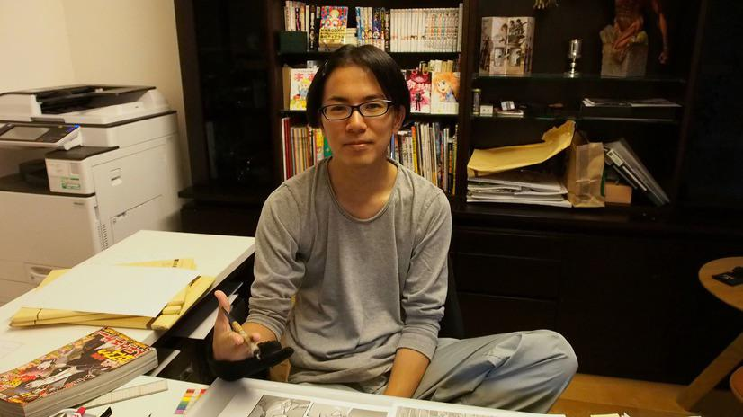
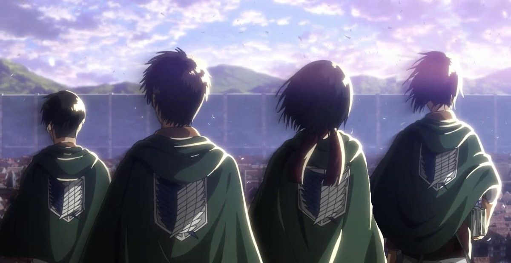
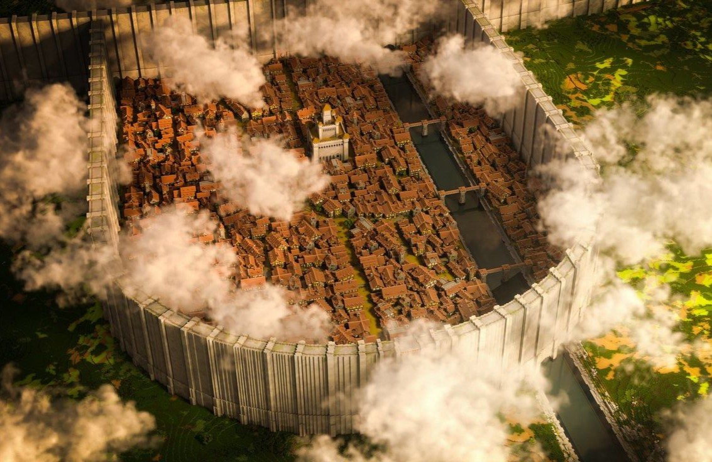

Shingeki no Kyojin foi criado por Hajime Isayama. A obra começou como um mangá e conquistou leitores ao apresentar uma história que, inicialmente, parecia ser apenas sobre a luta da humanidade contra os Titãs.

Shingeki no Kyojin é uma história ambientada em um mundo onde a humanidade vive protegida por enormes muralhas, tentando sobreviver à ameaça dos Titãs.

Conforme a história avança, descobrimos que existe muito mais além das muralhas. A obra apresenta mistérios, conflitos e diferentes perspectivas sobre o mundo e a humanidade.
Para mim, Shingeki no Kyojin não é apenas um anime. É uma obra que me apresentou diferentes formas de enxergar o mundo e me fez refletir sobre valores, escolhas, amizades, liberdade e crescimento.
Nesta página, compartilho um pouco mais sobre a minha relação com a obra e os valores que fazem parte da minha história.